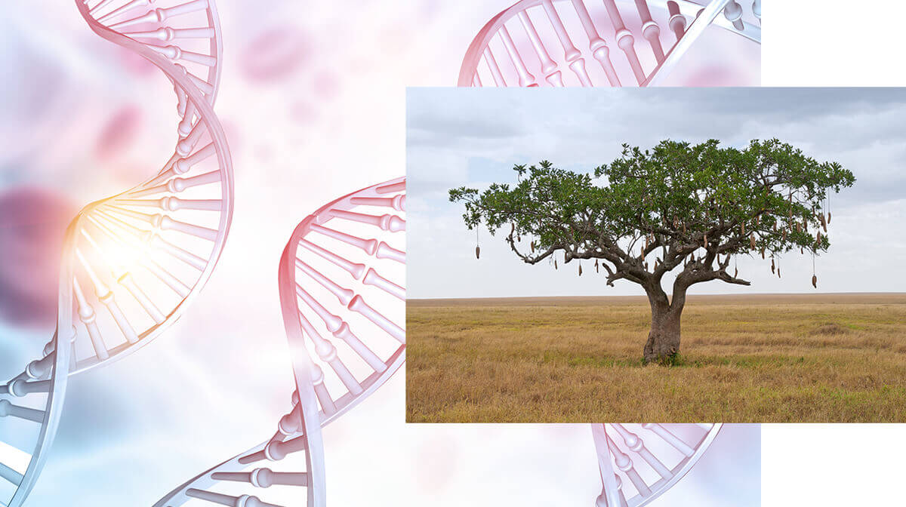

Главный секрет продукта — в синергии двух компонентов, усиливающих действие друг друга: гидролизованного высококачественного бразильского коллагена и экстракта уникального растительного вещества кигелина, имеющего могофункциональное воздействие на кожу. Азенуа® — для тех, кто хочет чего-то особенного. Его преимущества — не только в оригинальном и уникальном составе. Это комплекс, созданный на основе принципов доказательной медицины, помогающий выстроить внутреннюю связь с вашей кожей. Это альянс современных медицинских технологий и интуитивного подхода. Ваша кожа уникальна. Но поскольку продукт Азенуа® готов дружить с любым типом кожи, он обязательно найдет к подход и к вашей. А наши врачи объяснят — почему так происходит.

Продукт Азенуа®


Экспертное мнение
Эндокринолог, диабетолог, Смирнова Г. Е., врач, кандидат медицинских наук
С возрастом относительное содержание органических веществ и, в первую очередь коллагена, в костях уменьшается, а неорганических — увеличивается. В результате повышается хрупкость костей, увеличивая риск переломов. Поэтому грамотные врачи знают, что назначать кальций-содержащие препараты и диеты можно только в комплексе со средствами, которые повышают эластичность кости и помогают усвоиться кальцию. Речь идет о коллагене в виде гидролизата. Пептидный коллагеновый гидролизат в продукте Азенуа® оказывает значительное влияние и пролонгирует действие кальцитонина на костные ткани, сдерживая их разрушение. А содержащиеся в кигелине стероидные сапонины, обладающие гормоноподобным действием, повышают активность фибробласта, стимулируют образование коллагена и фибрилл эластина, и, таким образом, оказывают благотворное действие на структуру и тонус кожи.

Репродуктолог, Попова Н. Ю., врач акушер-гинеколог
К сожалению, женщины довольно часто переживают тяжелые и травматичные роды. Их последствия бывают не только внешними, порой они влияют на интимную жизнь. Во время родов половые органы женщины подвержены большим изменениям. Обычно восстановление происходит за 4-6 недель. Однако под действием гормональных трансформаций и послеродовых травм могут возникнуть следующие проблемы: сухость и болезненность, резкое снижение чувствительности, перерастяжение стенок матки, рубцы, сформировавшиеся после разрывов. Вернуть здоровье половым органам и мочевой системе помогут специальные упражнения Кегеля (их можно выполнять дома) в сочетании с приемом коллагеновых добавок. Одно из эффективных средств - продукт Азенуа, где основными действующими компонентами являются гидролизованный коллаген и экстракт Кигелии Африканской. Результат достигается благодаря воздействию на коллагеновые волокна, а также запуску естественных репаративных (восстановительных) процессов в тканях. При этом происходит формирование нового коллагена и эластина благодаря активации фибробластов. Как следствие — уплотнение и подтяжка слизистой половых органов, устранение неприятных симптомов.

Косметолог, Филиппова Н. С., врач-дерматолог
Целью глубокого лифтинга является усиление выработки собственного коллагена, который помогает вернуть. коже здоровье, ускоряет регенерацию клеток, восстанавливает эластичность и упругость кожи, разглаживает морщины. Однако сам по себе коллаген не способен вернуть коже упругость и эластичность — для этого ему необходим «партнер», способный подключить к этой работе фибробласты. Таким «партнером» коллагена в продукте Азенуа® является кигелин. Исследования показали, что гормоноподобные вещества, содержащиеся в кигелине, при взаимодействии с коллагеном позволяют добиться яркого лифтинг-эффекта. Это тот самый случай, когда здоровье и красота кожи начинаются изнутри, за счет синтеза собственного коллагена и без необходимости проведения косметических процедур. Кстати, многие мои клиенты старше 45 лет обычно не решаются сбрасывать лишний вес из-за не эстетичного эффекта провисания кожи, которым сопровождается похудение. Таким клиентам я рекомендую не отказываться от намерения сбросить вес и просто применять продукт Азенуа®, поскольку коллаген в комплексе с кигелином сохраняют кожу подтянутой и упругой.
Инструкции
Где купить?

Дистрибьюторы
- Дистрибьютор 1
- Дистрибьютор 2
- Дистрибьютор 3